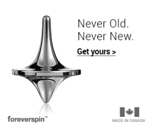
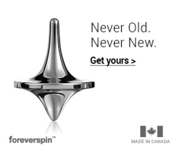

هل النظام الغذائي النباتي أكثر صحة من تناول اللحوم؟ وماذا يتوجب على النساء النباتيات أن يتناولن عند حملهن؟ اقرأ المزيد عن النباتيين والفيتامينات التي يحتاجونها

التعريف الأبسط للنباتية هو استهلاك الغذاء النباتي هو التغذية دون اللحوم والأسماك والدواجن.
يمتنع النباتيين عن تناول اللحم الحيواني ولكنهم يأكلون البيض ومنتجات الحليب، أما الخضريين فيمتنعون عن كل غذاء مصدره حيواني، بما في ذلك البيض، منتجات الحليب والعسل، ويشمل غذائهم الفاكهة، الخضراوات، البقوليات، الجذور، منتجات التوفو والجوز.
أولئك الذين يقررون الانتقال للتغذية الخضرية، عادة ما يرتكزون على اعتبارات أخلاقية، بيئية أو صحية. الاعتبارات الصحية تعتمد على كون الغذاء النباتي يحتوي على كمية قليلة من الدهون، وخصيصا الدهون المشبعة، ولا يحتوي تماما على الكولسترول.
يرتبط اتباع الغذاء النباتي بفوائد صحية مثل خفض مستويات الكوليسترول في الدم، انخفاض معدلات الوفيات الناجمة عن أمراض القلب وخفض معدلات الإصابة بسرطان البروستاتا، وسرطان القولون و مرض السكري، إليكم التفاصيل:
1.مؤشر كتلة اقل: يميل النباتيون إلى أن يكون مؤشر كتلة الجسم لديهم أقل وبالتالي فهم أقل خطرا للإصابة بالسرطان.
2.خفض ضغط الدم: ضغط الدم لدى النباتيين أقل لأن القائمة الغذائية النباتية تحتوي على كمية أقل من الملح. البوتاسيوم - الموجود في الفواكه والخضروات مثل الموز والباذنجان و الأفوكادو، البرتقال، البروكلي والسبانخ يساعد على خفض ضغط الدم.
3.مشاكل خضمية اقل: يعانون من مشاكل خضمية أقل لأن اللحوم والأسماك هي الأطعمة الأصعب للجسم من ناحية الهضم وهي تحتاج الى المزيد من الطاقة للقيام بذلك.
4.التخلص من الفضلات: تناول الفواكه والخضروات يساعد الجسم في عملية التخلص من الفضلات.
5.اقل عرضة لاعتام العدسة: النباتيون أقل عرضة بنسبة 30-40 في المئة لإعتام عدسة العين النامية من الأشخاص الذين يتناولون اللحوم بانتظام.
العديد من الأطباء ينصحون مرضى السكري باستهلاك الخضروات والفواكه و الحبوب الكاملة من أجل تحقيق التوازن في مؤشرات السكر. وقد أظهرت الدراسات أن اتباع نظام غذائي نباتي يمكن أن يحسن من صحة الأشخاص المصابين بمرض السكري من النوع 2.
وأظهرت دراسة أجريت في عام 2004 و 2005 أن مرضى السكري الذين اتبعوا نظاما غذائيا منخفض الدهون و نباتي احتاجوا دواء أقل لمرض السكري، حيث فقدوا الحساسية للانسولين و انخفض وزنهم، كما تحسن كل من مؤشر نسبة السكر في الدم و مستويات الدهون.
تظهر الدراسات أن الأشخاص الذين يتناولون اللحوم أقل عرضة لخطر الإصابة بسرطان البروستاتا وسرطان الجهاز الهضمي، للأسباب التالية:
اتباع نظام غذائي غني بالألياف، الكاروتينات (توجد في الجزر والبطاطا الحلوة، والسبانخ)، الفيتامينات، المعادن، والايسوفلافون (توجد في الصويا والبقوليات )يحمي من عدة بما في ذلك السرطان. هنالك علاقة وثيقة وجدت بين الاستهلاك اليومي من الفواكه والانخفاض بأكثر من 20 % في الوفيات الناجمة عن أمراض القلب والأمراض الدماغية الوعائية وسرطان المعدة والرئة و البنكرياس والقولون و المستقيم.
الغذاء النباتي يحتوي على كميات أقل من الدهون وخاصة الدهون المشبعة.
_________________________________________________________________________________
_________________________________________________________________________________________
________________________________________________________________________________________

الحياة . كيف تستمع بالحياة . كيف تتخلى عن النمطية تعلم أن تحب الحياة . ابحث عما يُسعدك الحياة اللغز الذي نبحث عن مكانه، الحياة ذاك ...الشيء البعيد

الحياة . كيف تستمع بالحياة . كيف تتخلى عن النمطية تعلم أن تحب الحياة . ابحث عما يُسعدك الحياة اللغز الذي نبحث عن مكانه، الحياة ذاك ...الشيء البعيد

الحياة . كيف تستمع بالحياة . كيف تتخلى عن النمطية تعلم أن تحب الحياة . ابحث عما يُسعدك الحياة اللغز الذي نبحث عن مكانه، الحياة ذاك ...الشيء البعيد
الحياة . كيف تستمع بالحياة . كيف تتخلى عن النمطية تعلم أن تحب الحياة . ابحث عما يُسعدك الحياة اللغز الذي نبحث عن مكانه، الحياة ذاك ...الشيء البعيد
 

شروق المالكي
هذا النص هو مثال لنص يمكن أن يستبدل في نفس المساحة